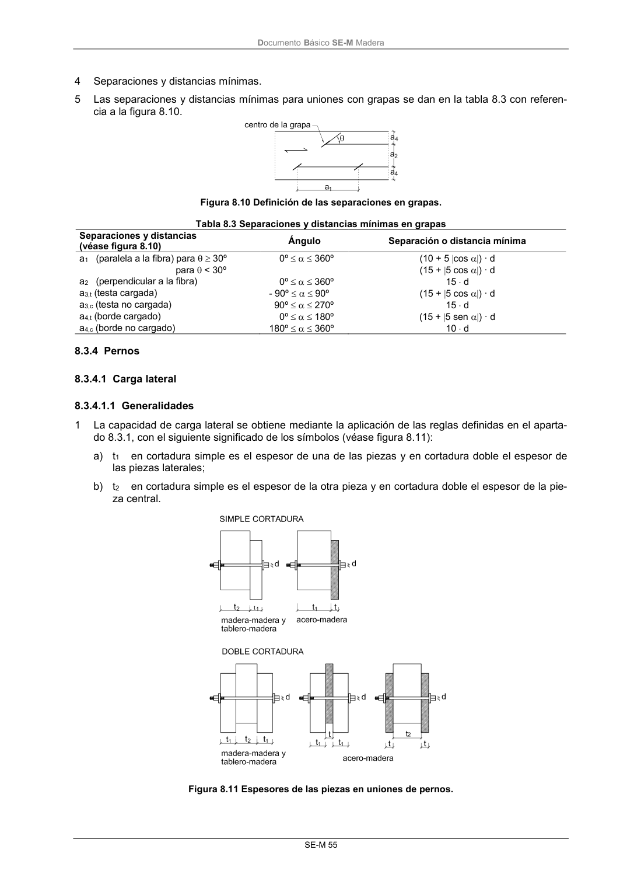

DB-SE-M Madera · edición 2019-12-20 · capa oficial
Documento DB-SE-M-oficial · SHA-256 del PDF 26b5819839ebfda78b0b119c5e76a0a37773b0d763c05688541870075df93718
Página física 61 de 132.
Copia fiel del PDF fuente · Fuente oficial
Ficha de la disposición en la fuente oficial
Formato: Texto de la página (Markdown)
Documento Básico SE-M Madera
SE-M 55
4
Separaciones y distancias mínimas.
5
Las separaciones y distancias mínimas para uniones con grapas se dan en la tabla 8.3 con referen-
cia a la figura 8.10.
Figura 8.10 Definición de las separaciones en grapas.
Tabla 8.3 Separaciones y distancias mínimas en grapas
Separaciones y distancias
(véase figura 8.10)
Ángulo
Separación o distancia mínima
a1 (paralela a la fibra) para 30º
para < 30º
0º 360º
(10 + 5 cos ) · d
(15 + 5 cos ) · d
a2 (perpendicular a la fibra)
0º 360º
15 d
a3,t (testa cargada)
- 90º 90º
(15 + 5 cos ) · d
a3,c (testa no cargada)
90º 270º
15 d
a4,t (borde cargado)
0º 180º
(15 + 5 sen ) · d
a4,c (borde no cargado)
180º 360º
10 d
8.3.4 Pernos
8.3.4.1 Carga lateral
8.3.4.1.1 Generalidades
1
La capacidad de carga lateral se obtiene mediante la aplicación de las reglas definidas en el aparta-
do 8.3.1, con el siguiente significado de los símbolos (véase figura 8.11):
a) t1
en cortadura simple es el espesor de una de las piezas y en cortadura doble el espesor de
las piezas laterales;
b) t2
en cortadura simple es el espesor de la otra pieza y en cortadura doble el espesor de la pie-
za central.
Figura 8.11 Espesores de las piezas en uniones de pernos.
